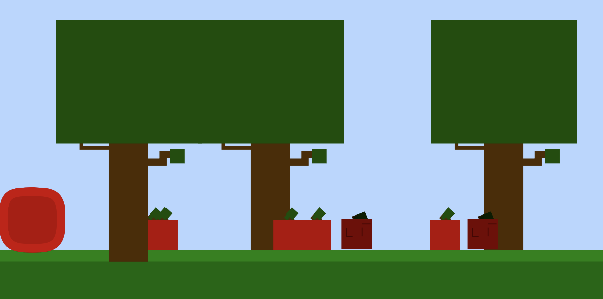

Forest Update
The ForestCraft Forest Update was a large package of fun! It was a huge update chain spanning from v0.1.5 to v0.1.5.15.
New Features
World Generation
The Forest Update was a miracle for the trees! It allowed their generation to be a more pleasant experience.
v0.1.5.5 was the version that trees could generate a lot better than before. For reference, take the following images as examples.
Apples
The only food at the time, the apple went through a few changes.
The apple received the following updates:
- v0.1.5.7 - This update made apples fall from trees. Before this update, apples just came out of the middle of nowhere.
- v0.1.5.15 - Multiple apples can now drop from trees, enabling people to farm apples. 
Trees and Wood
Trees! Trees were the center of attention in this update, so obviously they went through a lot of changes.
The trees received the following updates:
- v0.1.5.10 - With this update was the introduction of wood. Although the ability to punch trees has existed since v0.1.1.10, wood hasn't existed before this update. However, wood was not given any purpose.
- v0.1.5.11 - Right after the introduction of wood, a new feature was introduced. Hint: It's something to do with wood. In this version, gathering wood can hurt you, because I figured, hey, don't people get injured when chopping wood?
- v0.1.5.16 - After a few fails and debug sessions, you are finally allowed to climb trees. What's a forest update without climbing trees?
- v0.1.5.18 - Since now you can climb trees, you'll be poking your head in the leaves. So I made the leaves slow your fall - and ascent.
- v0.1.5.12 - It can be frustrating to gather 100 pieces of your useless wood and then die. So, in this version, your wood will drop upon death. To collect your wood, you walk over, and once you touch it, you will get your wood back. Beware, though, because it will desapawn after 30 seconds!